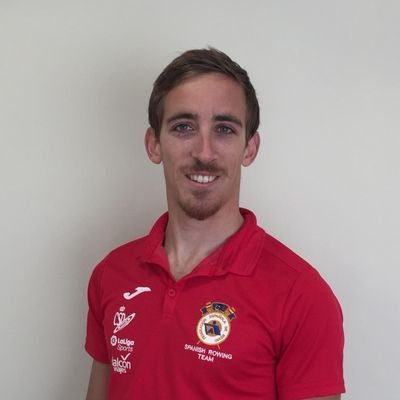

PhD student in Computational Biology at the Istituto Europeo di Oncologia

Girona (Spain) - Milan (Italy)
0034 618332056
adria.mitjavila94 @ gmail.com
Former biotechnologist who is living between computers and pursuing a PhD in Computational Biology. My interests are mostly related to Molecular Genetics, Signal Transduction and Epigenetics.
I am said to be a motivated, ambitious man. Furthermore, I can work individually as well as in a team and I believe myself capable of leading a little group of professional people.
Academic education
PhD in Computational Biology
- 2019 - Present
- Università degli Studi di Milano (UNIMI) and Scuola Europea di Medicina Molecolare (SEMM) (Milan, Italy).
- SEMM website
MSc in Molecular Genetics and Biotechnology
- 2017 - 2018
- Universidad de Sevilla (US) (Seville, Spain).
- Master’s degree focussed on the study of the molecular processes of living organisms, the gene expression, signal transduction and epigenetics. Specialization in R&D in Molecular Biology.
- Grade: 9.33/10.
- Master’s thesis: “Influence of Xrn1 in nucleosome positioning across Saccharomyces cerevisiae genome and its effects in transcription”. Grade: 9.2/10.
- Master’s website (in Spanish)
BSc in Biotechnology
- 2012 - 2017
- Universitat de Girona (UdG) (Girona, Spain).
- Bachelor’s degree focussed on the bases of Biology and Biotechnology. Specialization in Cellular & Molecular Biotechnology.
- Grade: 8.12/10
- Bachelor’s thesis: “Butyrate-induced changes in the diversity of intestinal mucosa-associated microbiota in colorectal cancer patients submitted to a lateral ileostomy”. Grade: 9.4/10.
- Bachelor’s website
Professional experience
PhD candidate in Computational Biology
- 10/2019 - Present
- Instituto Europeo di Oncologia (IEO) and Scuola Europea di Medicina Molecolare (SEMM) (Milan, Italy).
- Department of Experimental Oncology, group of Epigenetic Mechanisms in Stem Cell Differentiation and Cancer (PI: Dr. Diego Pasini).
- Supervisor: Dr. Diego Pasini.
Research assistant
- 07/2018 - 10/2018
- Insituto de Biomedicina de Sevilla (IBiS) (Seville, Spain).
- Department of Genetics, group of Gene Expression (PI: Dr. Sebastián Chávez de Diego).
- Bioinformatic analyses of MNase-seq data from wild-type and Ccr4-KO yeast strains to study the effect of Ccr4 in nucleosome positioning.
Master thesis student
- 09/2017 - 06/2018.
- Insituto de Biomedicina de Sevilla (IBiS) and Universidad de Sevilla (US) (Seville, Spain).
- Department of Genetics, group of Gene Expression (PI: Dr. Sebastián Chávez de Diego).
- Project in the context of the MSc degree in Molecular Genetics and Biotechnology from the Universidad de Sevilla (US).
- Thesis title: “Influence of Xrn1 in nucleosome positioning across Saccharomyces cerevisiae genome and its effects in transcription”.
- Bioinformatic analyses of MNase-seq data from wild-type and Xrn1-KO yeast strains to study the effect of Xrn1 in nucleosome positioning. MNase-qPCR analyses in a Xrn1 conditional mutant with two selected genes.
- Supervisors: Dr. Sebastián Chávez de Diego and Dr. Gabriel Gutierrez Pozo.
- Grade: 9.2/10.
Research internship
- 07/2017 - 09/2017
- Institut d’Investigació Biomèdica de Girona (IdIBGi) (Girona, Spain)
- Department of Inflammation and Metabolism, group of Diabetes, Endocrinology and Nutrition (PI: Dr. José Manuel Fernández-Real).
- Identification of new factors (genetic and bacterial) related to adipose tissue physiology and obesity.
Bachelor thesis student
- 01/2017 - 06/2017
- Microbial. Sistemes i aplicacions analítiques, S.L. and Universitat de Girona (UdG) (Girona, Spain)
- Thesis in the context of the BSc degree in Biotechnology from the Universitat de Girona (UdG)
- Thesis title: “Butyrate-induced changes in the diversity of intestinal mucosa-associated microbiota in colorectal cancer patients submitted to a lateral ileostomy”.
- DNA extraction of intestinal mucosa biopsies to analyse the microbiota before and after different treatments using qPCR and NGS.
- Supervisor: Dr. Jesus Garcia Gil.
- Grade: 9.4/10.
Professional internship
- 09/2016 - 01/2017
- Microbial. Sistemes i aplicacions analítiques, S.L. (Girona, Spain)
- Microbiological and molecular analyses of food and water samples to search for pathogens and perform food forensics.
Skills
Experimental techniques
| Bacterial culture |
Extraction |
Extraction |
Electrophoresis (agarose, SDS-PAGE) |
| Yeast culture |
Purification |
Purification |
Western Blot |
| Cell culture |
(RT-)(q)PCR |
- |
- |
| - |
Clonning |
- |
- |
| - |
MNAse digestion |
- |
- |
|
|
|
|
Languages
| Catalan |
Native |
Italian |
Intermediate |
| Spanish |
Native |
- |
- |
| English |
Advanced (IELTS 7.5 - C1) |
- |
- |
|
|
|
|
Additional education
IELTS Academic Exam
- British Council
- Overall grade: 7.5
- Listening: 7.0
- Reading: 8.0
- Speaking: 7.0
- Writing: 7.5
- 08/2019
DataCamp
Courses:
- Theory:
- Machine learning for everyone
- Git:
- Shell/Bash:
- Introduction to Bash Scripting
- Introduction to Shell
- Python:
- Introduction to Python
- Intermediate Python
- R:
- Intermediate R: practice
- Data maniplation with
dplyr
- Data visualization with
ggplot2 (part 1)
- Writing efficient R code
Organizations
SCB
Societat Catalana de Biologia - Catalan Society of Biology
- The Catalan Society of Biology (SCB) it is a branch of the Institute of Catalan Studies (IEC) that searches to bring professionals and students of the life sciences together in order to allow the exchange of ideas and the difussion of the research to the society.
- Member since 2017.
ASBTEC
Associació de Biotecnòlegs de Catalunya - Catalan Biotechnologists Association
- The Catalan Biotechnologists Associacition (ASBTEC) is a non-profit association that works to promote Biotechnology within society and wants to be the link between the academia and the industry. To do so, it is organizing several workshops and symposioums with topics that range from divulgation to academic research or entrepreneurship.
- Member since 2017.
- Active member since 2018.
- Board member since 2019.
Other honours and awards
SEMM PhD Fellowship
- Scuola Europea di Medicina Molecolare - European School of Molecular Medicine
- Fellowship to pursue their PhD program in Systems Medicine (curriculum of Computational Biology)
- 10/2019 - Present
Elite Rower
- Federación Española de Remo - Spanish Rowing Federation
- I have been granted the category of high-level athlete in Spain, first in 2015 for finishing at 6th place at the World Rowing Under-23 Championship and once more in 2016 for becoming World Rowing Under-23 Champion. See my sports curriculum here and my WorldRowing athlete page here.
- 2015-2021
World Rowing U23 Champion
- FISA - WorldRowing
- 1st place at the World Rowing Under-23 Championship in the category of lightweigt double scull (BLM2x)
- Rotterdam, Netherlands. 2016